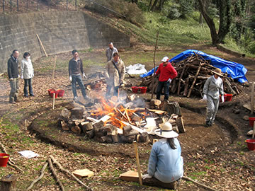

― これまでのイベント（記録） ―
| （画像をクリックで拡大します） |
数千年の時空をこえて「縄文スピリットから始まる新しい創造」の炎が、東京の縄文王国・町田の地に
燃え上がりました。
『東京町田・縄文アートフェス』ではメインイベントである「野焼きまつり」をはじめ、縄文シンポジウム
や町田の縄文遺跡を巡るツアー、縄文ワークショップといった縄文づくしの一日でした。
=∴=∵=∴=∵=∴=∵=∴=∵=∴=∵=∴=∵=∴=∵=∴=∵=∴=∵=∴=∵=∴=∵=∴=∵=∴=∵=∴=
野焼きする作品は、2月15日に集まった約40名の方々が制作した縄文土器・土偶の数々。
町田市の出土品を参考に、自由に創作した作品です。
まずは講師・猪風来が縄文造形の意味をはじめ、文様の入れ方や入魂の造形など技法をレクチャー。
そこから皆が各々の創造をふくらませてゆき、見事な縄文の作品をつくりあげました。
このほか、猪風来（猪風来美術館館長）と村上原野（同・陶芸指導員）による町田市出土の再現制作を
した土器・土偶なども一緒に焼き上げます。
=∴=∵=∴=∵=∴=∵=∴=∵=∴=∵=∴=∵=∴=∵=∴=∵=∴=∵=∴=∵=∴=∵=∴=∵=∴=∵=∴=
野焼き当日には北海道のアイヌの方々も駆け付け、猪風来らとともに火と天地の神々に祈りをささげる
縄文野焼きカムイノミをとりおこないました。
炎に向きあっての大自然への祈りの儀は、野焼きと祭事の本質をあらわす象徴的なシーンでもありました。
東京藝術大学の方々も野焼きスタッフとして参加し、たくさんの人たちの力が集結します。
|  |  |
| 【数日前から野焼き場を整備する（野炉焼き）】 | |
 |
|
| 【火入れ】 | 【カムイノミの儀】 |
| （画像をクリックで拡大します） | |
=∴=∵=∴=∵=∴=∵=∴=∵=∴=∵=∴=∵=∴=∵=∴=∵=∴=∵=∴=∵=∴=∵=∴=∵=∴=∵=∴=
 |
 |
| 【作品を火の周りに並べる】 | 【徐々に炙ってゆく】 |
 |
 |
| 【作品が熱くなってから炎の中に入れる】 | 【木を積んで炎を大きく育ててゆく】 |
朝7時から野炉の準備をはじめ、9時に火入れとカムイノミ、そこから徐々に炎を大きく育ててゆきます。
皆の制作した作品も火にあぶられて、熱が高まるとともに土色から黒、黒から赤へと次第にその色を変え
てゆきます。
 |
 |
| 【器体の色をみながら木を積む】 | 【炎が野炉を包み込むクライマックスへ！】 |
 |
 |
| 【炎の子宮が完成し、炎が大きくたちのぼる】 | 【少しずつ炎がおさまってゆく】 |
 |
 |
| 【焼き上がった作品がその姿を現す】 | |
| （画像をクリックで拡大します） | |
最後に大きな炎が町田の空へとたちのぼり、作品に新たな命が宿ります。
“やきものの原点”の力強さを居あわせたたくさんの人たちが共有した時間でした。
=∴=∵=∴=∵=∴=∵=∴=∵=∴=∵=∴=∵=∴=∵=∴=∵=∴=∵=∴=∵=∴=∵=∴=∵=∴=∵=∴=
同日には縄文シンポジウムとしてひなた村カリヨンホールで小林達雄国学院大学名誉教授、町田市の
川口正幸学芸員らによる講演や、大薮龍二郎、小林武人によるアーティトトークも行われ、立ち見が出る
ほどの盛況となりました。
また、野焼き会場では黒曜石を使ったアクセサリーやアイヌ文化などのワークショップもあり、訪れた人の
興味を引いていました。
野焼きの佳境には燃えさかる炎の前で GENZ によるバンドの演奏が催され、祭りの熱気を盛り上げました。
 |
 |
| 【黒曜石ワークショップ】 | 【アイヌワークショップ】 |
 |
|
| 【炎の前で GENZ のライブ】 | |
| （画像をクリックで拡大します） | |
このほか町田の縄文遺跡を巡るツアーなども開催され、日本列島の遙かな文化のルーツを見て、聞いて、
ふれて感じる縄文づくしの一日となりました。
=∴=∵=∴=∵=∴=∵=∴=∵=∴=∵=∴=∵=∴=∵=∴=∵=∴=∵=∴=∵=∴=∵=∴=∵=∴=∵=∴=
今年1月には東京青山のスパイラルガーデンで開催された『ARTs of JOMON 展』で現代縄文アートの新潮流
を示し、そしてこの2月の町田での縄文野焼きの実現は、縄文の古層から現代までをつらぬく縄文文化の心髄を
あきらかにする“縄文の美”の狼煙となりました。
「これは、約40年間にわたり縄文の道を邁進してきた中での、夢の実現でもありました」（猪風来）
=∴=∵=∴=∵=∴=∵=∴=∵=∴=∵=∴=∵=∴=∵=∴=∵=∴=∵=∴=∵=∴=∵=∴=∵=∴=∵=∴=
■ 問い合わせ先
（事業全般に関すること）産業労働局観光部振興課 TEL:03-5320-4768
（イベントに関すること）パシフィックコンサルタンツ株式会社 TEL:042-372-3297

|
| 【東京町田・縄文アートフェスチラシ】 →PDF版を開く |

|
|
| 猪風来（土偶を制作） | 村上原野（土器づくり） |